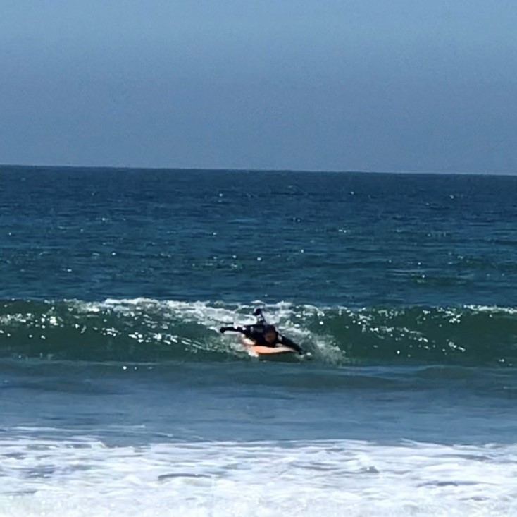
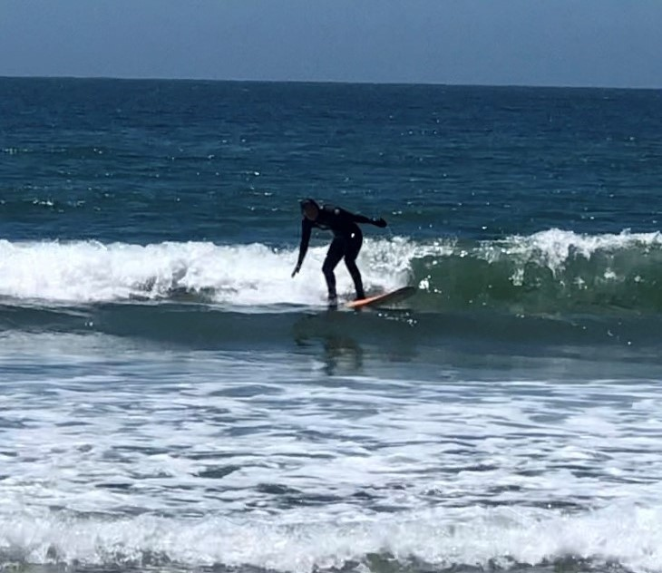

The goal of this project is to step into a user’s shoes. I did this by observing real users interacting with an interface, a surfboard, and then interviewed these individuals about their experiences. Lastly, I created personas based on these users, and illustrated a storyboard for one of the personas.
A surfboard enables a user to glide across the ocean surface while being propelled by a wave. You stand on the body of the surfboard, while the fins help improve directional stability.
Elite Erica is a veteran surfboard user. She has been using a surfboard for more than 10 years and glides across the water atop his surfboard with ease. She's committed to being the best surfboard user she can be and works hard to get better. Despite Erica's wealth of experience, she still falls off of her surfboard at times, due to the slick, wet surface. Erica represents surfboard users who have either been trained or have been surfing for a very long time and can successfully stand on their surfboard, turn, and do other tricks. These users experience less challenges with using a surfboard, but still struggle at times, due to the variability of ocean and wave conditions.
Beginner Brittany is an inexperienced surfboard user who just started surfing. She falls off of her surfboard frequently, but still enjoys her time and attempts to get better at using her surfboard. Brittany frequently loses control of her surfboard because of how big and heavy it is. Additionally. she struggles to stay standing on her surfboard for long periods of time. Brittany represents surfboard users who have little to no experience using a surfboard and are just trying their very best to use thier surfboard correctly.


Some of the users that I observed had problems with their hands and feet slipping off of the surfboards pretty frequently. I did some further research on this and found that normally surfboard users put wax on the body of their board where their feet go. The users that I observed rented boards from a surfboard rental shop. Therefore, they couldn't put wax on their surfboards.